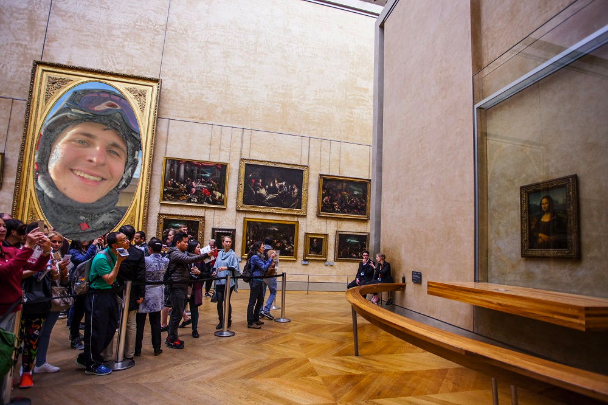

Hi Professor Crawfis!
This page will be automatically removed from my website on 1/21/21.

I applied the Photoshop pencil filter to this photo and used a layer mask to place my face into this frame in the louvre.
I used a layer mask and some color replacement and blurring to place my face into this Fast and Furious picture.

I applied the Photoshop brick filter to this photo of a brick wall and used a layer mask to place my face onto it.